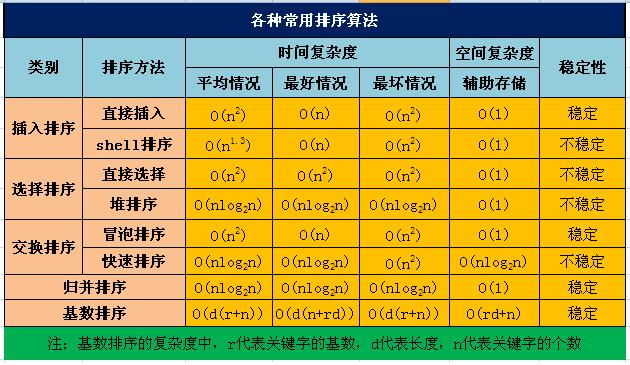

0. 前言 众所周知，对于顺序表，以二分法 查找一个数，算法时间复杂度为O(nlongn)。因而，一次排好序，便可以节约很多查找的时间。
由此可见，排序算法尤为重要。以下介绍八大排序算法，都是从小到大排序。
1. 插入排序 i从1到n-1，每次将第i位的数插入到前面已排好序的序列中。
插入的方法为：将i与i-1位置的数比较，i小则交换并i–，i大则停止插入。
1 2 3 4 5 6 7 8 9 10 11 12 13 14 15 void InsertSort (int *num, int n, int start, int grep) for (int i=start; i<n; i+=grep) { for (int j=i; j>=0 +grep && num[j]<num[j-grep]; j-=grep) { int temp = num[j]; num[j] = num[j-grep]; num[j-grep] = temp; } } }
2. 希尔排序 将以5 3 1为增量的序列依次进行插入排序。例如，增量为5时，对(a0,a5…)、(a1,a6…)、(a2,a7…)、(a3,a8…)、(a4,a9…)序列依次进行插入排序。
1 2 3 4 5 6 7 8 9 void ShellSort (int *num, int n) for (int i=0 ; i<5 ; i++) InsertSort(num, n, i, 5 ); for (int i=0 ; i<3 ; i++) InsertSort(num, n, i, 3 ); InsertSort(num, n, 0 , 1 ); }
3. 冒泡排序 每次从0到i序列的数中挑取最大的数放在i位置，i从n-1到0。
挑取最大数的过程为：将j位置数与j+1位置比较，j大则交换，小不交换，j++。
1 2 3 4 5 6 7 8 9 10 11 12 13 14 15 16 17 18 19 20 void BubbleSort (int *num, int n) for (int i=0 ; i<n; i++) { bool allSort = true ; for (int j=1 ; j<n-i; j++) { if (num[j] < num[j-1 ]) { int temp = num[j]; num[j] = num[j-1 ]; num[j-1 ] = temp; allSort = false ; } } if (allSort) break ; } }
4. 快速排序 遍历一次数组，以第一个数为标准，分成三部分，实现：第一个数在中间，小于它的数在它前面，大于它的数在它后面。然后对前部分和后部分递归该操作，递归终点为数组中个数为1。此处要注意的是，中间部分的数不需要再递归操作。
快排核心 遍历一遍数组，空间复杂度为O(1)，将数组分为三部分的方法为：
1）取出第一个数暂存，设定i和j分别指向数组头和尾，pos指向空位置；
2）j--，直到比第一个数小，取出j位置数放到pos位置，pos=j；
3）i++，直到比第一个数大，取出i位置数放到pos位置，pos=i。
其中，要时刻保持i<j。
代码：
1 2 3 4 5 6 7 8 9 10 11 12 13 14 15 16 17 18 19 20 21 void QuickSort (int *num, int n) if (n <= 1 ) return ; int i = 0 , j = n-1 ; int temp = num[i]; while (i<j) { while (num[j] >= temp && j>i) j--; num[i] = num[j]; while (num[i] <= temp && i<j) i++; num[j] = num[i]; } num[i] = temp; QuickSort(num, i); QuickSort(num+i+1 , n-i-1 ); }
5. 选择排序 每次从i到n-1个数中选最小的数放在i位置，i从0到n-1。
1 2 3 4 5 6 7 8 9 10 11 12 13 14 15 16 17 18 void SelectSort (int *num, int n) for (int i=0 ; i<n; i++) { int min = num[i], pos; for (int j=i+1 ; j<n; j++) { if (num[j] < min ) { min = num[j]; pos = j; } } num[pos] = num[i]; num[i] = min ; } }
6. 堆排序 堆排序，又称完全二叉树排序。是将数组看作一颗完全二叉树，数组i位置的左右孩子分别为2*i+1和2*i+2位置。
排序过程为：
1）建堆：从最后一个往第一个，逐个进行“向下筛选”，即建成最大顶堆；
2）排序：将堆顶（堆中的最大值）取出，将最后一个结点放置堆顶，然后再对第一个结点（堆顶）进行“向下筛选”；
向下筛选：当结点两个孩子的值比该结点的值大时，就交换结点与孩子位置。然后，对交换后的结点重复操作，直到两个孩子的值都比该结点小，或孩子为空。
代码：
1 2 3 4 5 6 7 8 9 10 11 12 13 14 15 16 17 18 19 20 21 22 23 24 25 26 27 28 29 30 31 32 33 34 35 36 37 38 39 40 41 42 43 void HeapAdjust (int *num, int n, int pos) int lchild = 2 *pos+1 , rchild = 2 *pos+2 ; int maxPos; while (pos<n && lchild<n) { if (num[lchild] >= num[rchild]) maxPos = lchild; else if (rchild < n) maxPos = rchild; if (num[pos] < num[maxPos]) { int temp = num[maxPos]; num[maxPos] = num[pos]; num[pos] = temp; pos = maxPos; lchild = 2 *pos+1 , rchild = 2 *pos+2 ; } else break ; } } void HeapSort (int *num, int n) for (int i=n-1 ; i>=0 ; i--) { HeapAdjust(num, n, i); } for (int i=n-1 ; i>0 ; i--) { int temp = num[0 ]; num[0 ] = num[i]; num[i] = temp; HeapAdjust(num, i, 0 ); } }
7. 归并排序 对于一段数组先分两半，各自进行归并排序，再将两半部分内容有序地合并起来，此时只需各遍历一次即可，采用递归实现。递归的终结点是数组中只有一个数时则不需要进行上述操作。
1 2 3 4 5 6 7 8 9 10 11 12 13 14 15 16 17 18 19 20 21 22 23 24 25 26 27 28 29 30 31 32 33 34 35 36 37 38 39 40 41 42 43 44 45 46 47 void MergerSort (int *num, int n) if (n == 1 ) return ; int mid = n/2 ; MergerSort(num, mid); MergerSort(num+mid, n-mid); int *temp = (int *)malloc (sizeof (int ) * n); int i = 0 , j = mid, k = 0 ; while (i<mid && j<n) { if (num[i] <= num[j]) { temp[k] = num[i]; i++; } else { temp[k] = num[j]; j++; } k++; } while (i<mid) { temp[k] = num[i]; k++; i++; } while (j<n) { temp[k] = num[j]; k++; j++; } for (int i=0 ; i<n; i++) num[i] = temp[i]; free (temp); }
8. 基数排序 在所有要排序的数据中找到最大的数，求出它的位数n。
建立编号从0到9的十个队列。
i从最高位n到最低位1。
遍历数组将第i位为0的依次放入编号为0的队列中，第i位为1的放入编号为1的队列中。。。
所有数入相应队列后，再依次将0到9编号队列中数取出放回数组中。
然后对低一位重复该操作。
1 2 3 4 5 6 7 8 9 10 11 12 13 14 15 16 17 18 19 20 21 22 23 24 void RadixSort (int *num, int n, int limit) queue <int > radix[10 ]; for (int i=1 ; i<limit; i*=10 ) { for (int j=0 ; j<n; j++) { radix[num[j]/i%10 ].push(num[j]); } int j=0 ; for (int k=0 ; k<10 ; k++) { while (!radix[k].empty()) { num[j] = radix[k].front(); radix[k].pop(); j++; } } } }
9. 八大排序时间复杂度比较

10. 代码 更多详细代码和时间复杂度比较，见github